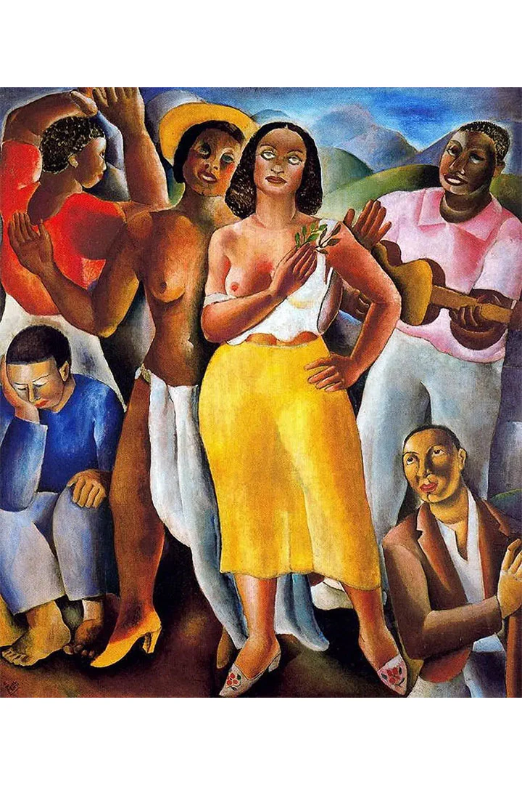
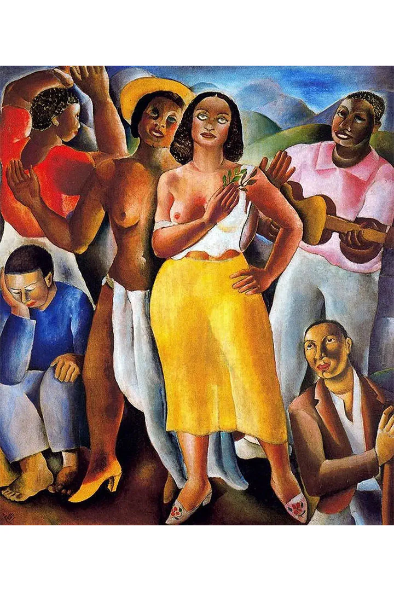
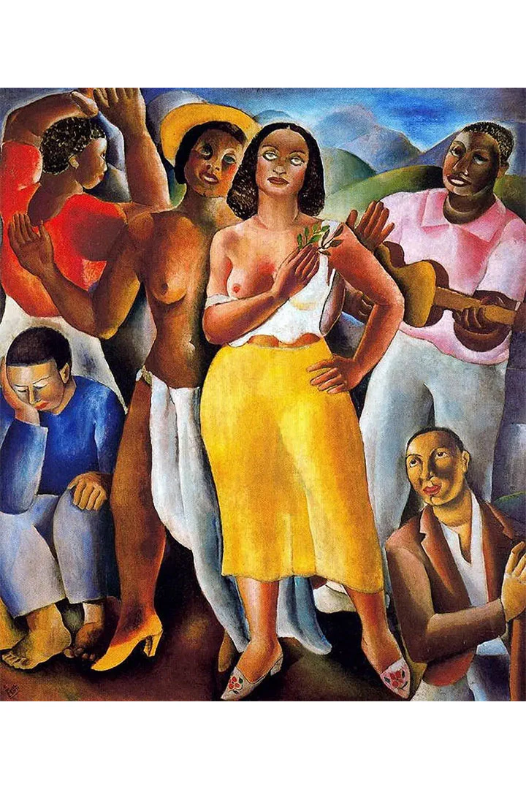

Di Cavalcanti (1897–1976) foi um dos mais importantes artistas do Modernismo brasileiro. Nasceu no Rio de Janeiro e se destacou como pintor, ilustrador e muralista, com uma obra voltada para retratar o cotidiano brasileiro, especialmente das classes populares.
Ele foi um dos organizadores da Semana de Arte Moderna de 1922, evento que marcou o início do Modernismo no Brasil. Sua arte buscava representar a vida urbana, o samba, os trabalhadores, as mulheres mestiças e a alegria popular, sempre com um olhar crítico e ao mesmo tempo celebrativo da cultura brasileira.
Di Cavalcanti também teve passagem pela Europa, onde teve contato com o cubismo, o expressionismo e outras vanguardas europeias, que influenciaram seu estilo.
Cores vibrantes
Formas curvas e sensuais
Temas sociais e culturais do Brasil
Ele também foi ilustrador de revistas e livros, e pintou murais importantes em edifícios públicos.
Di Cavalcanti ajudou a construir uma arte brasileira, moderna e popular, sendo considerado um dos maiores nomes da pintura nacional do século XX.
